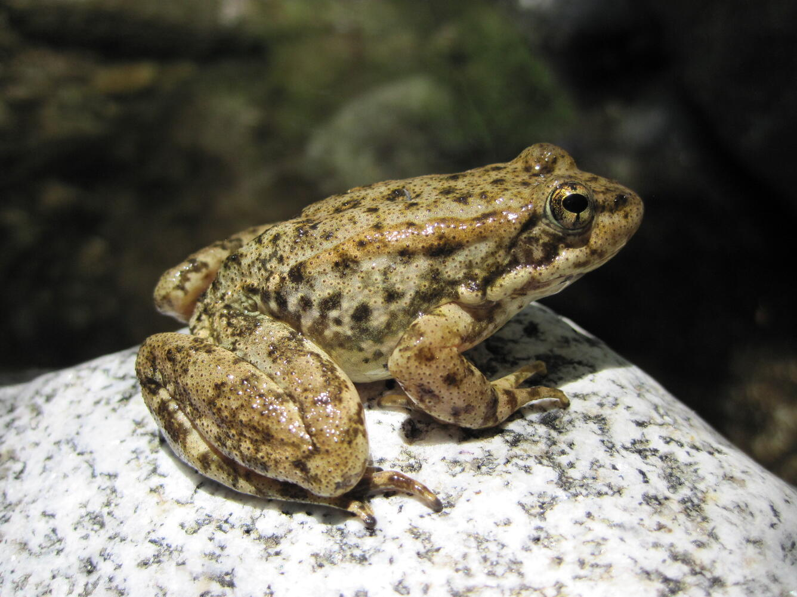
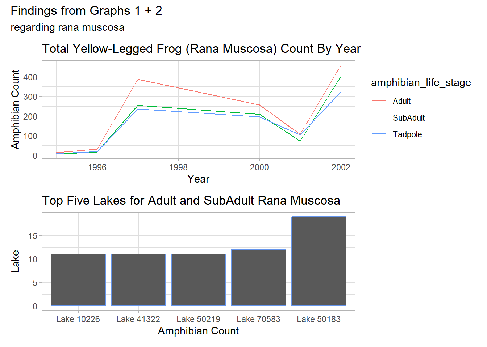

Code
library(tidyverse)
library(here)
library(tsibble)
library(feasts)
library(lubridate)
library(fable)
library(patchwork)
#install.packages('patchwork')
library(tidyverse)
library(here)
library(tsibble)
library(feasts)
library(lubridate)
library(fable)
library(patchwork)
#install.packages('patchwork')amphibians_raw <- read.csv(here("data", "sierra_amphibians.csv"))amphibians_filtered <- amphibians_raw %>%
mutate(date = lubridate::mdy(survey_date)) %>%
filter(amphibian_species == 'RAMU') %>%
mutate(recorded_year = year(date)) %>%
filter(amphibian_life_stage == 'Tadpole' | amphibian_life_stage == 'Adult' | amphibian_life_stage == 'SubAdult') %>%
group_by(recorded_year, amphibian_life_stage) %>%
count()frog_graph1 <- ggplot(data = amphibians_filtered, mapping = aes(x = recorded_year, y = n, group = amphibian_life_stage)) +
geom_line(aes(color = amphibian_life_stage)) +
labs(title = 'Total Yellow-Legged Frog (Rana Muscosa) Count By Year', x = 'Year', y = 'Amphibian Count') +
theme_light()sierra_top_5 <- amphibians_raw %>%
filter(amphibian_species == 'RAMU') %>%
filter(amphibian_life_stage == 'Adult' | amphibian_life_stage == 'SubAdult') %>%
group_by(lake_id) %>%
summarise(n = n()) %>%
mutate(lake_string = paste('Lake', lake_id)) %>% #I won't pretend that the following code for this chunk was my idea. This was devised by a friend of mine who works at Fish and Wildlife on a Discord call. They are way better at R than me. This turns the lake_id column into a string that can be more easily called by other functions.
slice_max(n, n = 5) %>% #selecting the lakes in the top 5
mutate(lake_string = fct_reorder(lake_string, n, .fun = 'max'))frog_graph2 <- ggplot(data = sierra_top_5, aes(x = lake_string, y = n)) +
geom_col(
colour = 'cornflowerblue'
) +
labs(
title = 'Top Five Lakes for Adult and SubAdult Rana Muscosa',
x = 'Amphibian Count',
y = 'Lake',
cex.main = .25
) +
theme_light()combined_plot <- frog_graph1 + frog_graph2 + plot_layout(nrow = 2)
combined_plot + plot_annotation(
title = 'Findings from Graphs 1 + 2',
subtitle = 'regarding rana muscosa'
)
Graphs compiled using data from the Sierra Lakes Inventory Project. Graph 1 (top) graphs total frog count by life stage, excluding EggMass, across all bodies of water. Graph 2 combines counts of frogs in the Adult and Subadult life stage, and shows the top 5 lakes by greatest observed counts.
For figure 1, years 1996 to 1997 saw a spike in observed frogs across all life stages- Adult, SubAdult, and Tadpole. Then, observations saw a decline until 2001, before spiking again in 2002.
For figure 2, the lake that featured the highest count of frogs was Lake 50183.
Knapp, R.A., C. Pavelka, E.E. Hegeman, and T.C. Smith. 2020. The Sierra Lakes Inventory Project: Non-Native fish and community composition of lakes and ponds in the Sierra Nevada, California ver 2. Environmental Data Initiative. https://doi.org/10.6073/pasta/d835832d7fd00d9e4466e44eea87fab3